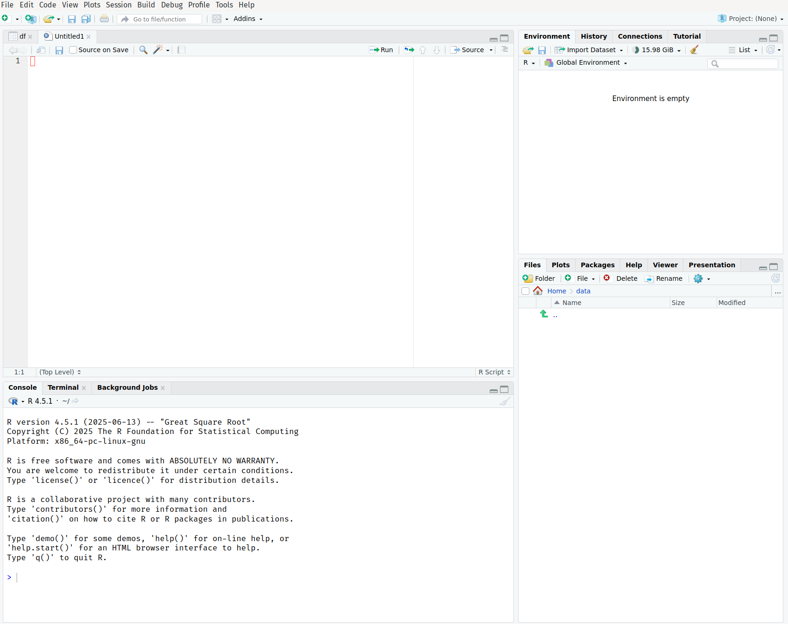

# Start typing and press Tab
mea # Tab will show mean(), median(), etc.
dat # Tab will show available data objectsRStudio Interface
Introduction
Now that you have R and RStudio installed and have experimented with R as a calculator, it’s time to master the RStudio interface. RStudio is your command center for data analysis, and understanding its layout will make you much more efficient and productive.
Think of RStudio as the cockpit of your data science aircraft – every panel, button, and window has a purpose, and knowing where everything is will help you navigate your analytical journey smoothly.
The Four-Pane Layout
When you open RStudio, you’ll see four main panes.

Let’s explore each one:
1. Source Pane (Top-Left)
The Source pane is your text editor where you write and edit R scripts, R Markdown documents, and other files.
Key Features: - Syntax highlighting (different colors for different code elements) - Auto-completion (press Tab while typing) - Code folding (collapse/expand code sections) - Multiple tabs for different files - Line numbers for easy navigation
Common File Types: - .R files: R scripts - .Rmd files: R Markdown documents - .qmd files: Quarto documents - .txt, .csv: Data files
Useful Shortcuts: - Ctrl+Enter (Windows/Linux) or Cmd+Enter (Mac): Run current line or selection - Ctrl+Shift+Enter: Run entire script - Ctrl+S: Save file - Ctrl+Z: Undo
2. Console Pane (Bottom-Left)
The Console is where R commands are executed and results are displayed. This is the same console you used when learning R as a calculator.
Key Features: - Interactive R prompt (>) - Command history (use up/down arrows) - Real-time output and error messages - Auto-completion support
Console Tabs: - Console: Main R interaction - Terminal: System command line access - Background Jobs: Long-running tasks
Best Practices: - Use the console for quick tests and exploration - Write important code in the Source pane (scripts) - Don’t rely on console for reproducible analysis
3. Environment/History Pane (Top-Right)
This pane contains several important tabs:
Environment Tab
Shows all objects (variables, functions, data) currently in your R workspace.
Information Displayed: - Variable names and types - Data preview for data frames - Function definitions - Memory usage
Useful Features: - Click on data frames to view them - Click the broom icon to clear environment - Import data using the Import Dataset button
History Tab
Keeps track of all commands you’ve run in the current session.
Features: - Search through command history - Send commands back to console or source - Save history for future reference
Connections Tab
Manage database connections (for advanced users).
Tutorial Tab
Access interactive tutorials (if installed).
4. Files/Plots/Packages/Help Pane (Bottom-Right)
This multi-purpose pane contains five essential tabs:
Files Tab
A file browser for navigating your computer’s file system.
Features: - Navigate folders and files - Set working directory - Create new folders - Upload/download files - View file details
Plots Tab
Displays all graphics and visualizations you create.
Features: - View current and previous plots - Export plots (PNG, PDF, etc.) - Zoom in/out - Navigate between multiple plots
Packages Tab
Manage R packages (extensions that add functionality).
Features: - View installed packages - Install new packages - Load/unload packages - Update packages - Search CRAN
Help Tab
Access R documentation and help files.
Features: - Search R documentation - View function help pages - Browse package documentation - Access vignettes and tutorials
Viewer Tab
Display web content, HTML widgets, and local web applications.
Customizing Your RStudio Interface
Changing the Layout
You can customize the pane layout to suit your preferences:
- Go to Tools > Global Options
- Select Pane Layout from the left menu
- Choose which tabs appear in which panes
- Rearrange panes to your liking
Themes and Appearance
Make RStudio comfortable for your eyes:
- Tools > Global Options > Appearance
- Choose from various themes:
- Light themes: Default, Textmate, Tomorrow
- Dark themes: Dracula, Material, Vibrant Ink
- Adjust font size and type
- Customize editor theme separately
Useful Settings
Navigate to Tools > Global Options and consider these settings:
General
- Restore .RData into workspace at startup: Uncheck (recommended)
- Save workspace to .RData on exit: Never (recommended)
- Always save history: Check if desired
Code
- Insert spaces for tab: Check (recommended)
- Tab width: 2 or 4 spaces
- Show line numbers: Check
- Highlight selected word: Check
R Markdown
- Show output inline: Choose preference
- Show output preview: In Viewer Pane
Essential RStudio Features
Code Completion
RStudio provides intelligent code completion:
Code Snippets
Pre-written code templates that you can insert:
# Type these and press Tab:
fun # Creates function template
if # Creates if statement template
for # Creates for loop template
lib # Creates library() callMultiple Cursors
Hold Ctrl (Windows/Linux) or Cmd (Mac) and click to place multiple cursors for simultaneous editing.
Code Folding
Click the small triangles next to line numbers to collapse/expand code sections.
Find and Replace
Ctrl+F: Find in current fileCtrl+Shift+F: Find in files (project-wide search)Ctrl+H: Find and replace
Working with Scripts
Creating a New Script
- File > New File > R Script
- Or use shortcut:
Ctrl+Shift+N
Best Practices for Scripts
# ============================================================================
# Project: My First R Analysis
# Author: Your Name
# Date: 2024-09-21
# Description: Learning RStudio interface
# ============================================================================
# Load required libraries
library(tidyverse)
# Set up working directory
setwd("~/Documents/R-Projects")
# Your analysis code here...
# Section 1: Data Import ----
# (Four dashes create a foldable section)
# Section 2: Data Cleaning ----
# Section 3: Analysis ----
# Session info for reproducibility
sessionInfo()Running Code from Scripts
- Current line:
Ctrl+Enter - Selected lines: Highlight and
Ctrl+Enter - Entire script:
Ctrl+Shift+Enter - Current chunk:
Ctrl+Shift+C(in R Markdown)
RStudio Projects
What are Projects?
RStudio Projects help organize your work by: - Setting working directory automatically - Preserving command history - Managing workspace - Integrating with version control (Git)
Creating a Project
- File > New Project
- Choose:
- New Directory: Start fresh
- Existing Directory: Use existing folder
- Version Control: Clone from Git repository
- Give your project a name and location
- Click Create Project
Project Benefits
# With projects, you can use relative paths
read.csv("data/my_data.csv") # Instead of full path
# Projects remember your settings
# - Open files
# - Working directory
- Command historyKeyboard Shortcuts (Essential)
General
Ctrl+N: New fileCtrl+O: Open fileCtrl+S: SaveCtrl+Shift+S: Save asCtrl+W: Close current tab
Code Execution
Ctrl+Enter: Run current line/selectionCtrl+Shift+Enter: Run entire scriptCtrl+Shift+P: Re-run previous region
Editing
Ctrl+A: Select allCtrl+D: Delete lineCtrl+Shift+D: Duplicate lineAlt+Up/Down: Move lines up/down
Getting Help
Built-in Help System
# Different ways to get help
help(mean) # Formal help page
?mean # Shortcut for help
??mean # Search for functions containing "mean"
example(mean) # Run examples from help pageHelp Panel Features
- Search box: Find functions and topics
- Contents: Browse package documentation
- Index: Alphabetical function list
Troubleshooting Common Issues
Panes Disappeared
- View > Panes > Show All Panes
- Or drag pane dividers to make them visible
Console Shows + Instead of >
- You have an incomplete command
- Press
Escto cancel and return to normal prompt
Script Won’t Run
- Check for syntax errors (red X marks in margin)
- Ensure proper parentheses and quotes matching
- Look for error messages in console
RStudio is Slow
- Clear workspace:
rm(list = ls()) - Restart R: Session > Restart R
- Close unnecessary tabs and plots
Practical Exercise
Let’s practice using the RStudio interface:
- Create a new R script
- Add this header:
# ============================================================================
# Practice Script: RStudio Interface
# Date: Today's date
# ============================================================================
# Practice calculations
simple_calculation <- 10 + 5 * 2
print(simple_calculation)
# Create some data
my_numbers <- c(1, 2, 3, 4, 5)
my_mean <- mean(my_numbers)
my_sum <- sum(my_numbers)
# Display results
cat("Numbers:", my_numbers, "\n")
cat("Mean:", my_mean, "\n")
cat("Sum:", my_sum, "\n")- Save the script as “rstudio_practice.R”
- Run the code line by line using
Ctrl+Enter - Observe how variables appear in the Environment pane
- Get help on the
meanfunction using?mean
Summary
You now understand the RStudio interface:
- Source pane: Write and edit scripts
- Console pane: Execute commands interactively
- Environment pane: View workspace objects and history
- Files/Plots/Help pane: Manage files, view plots, get help
Key Takeaways
- Use scripts for reproducible analysis
- Organize work with RStudio Projects
- Leverage shortcuts for efficiency
- Customize interface to your preferences
- Use built-in help extensively
Next Steps
Now that you’re comfortable with the RStudio interface:
- R Scripts and Projects - Organize your R work effectively
The more you use RStudio, the more natural it becomes. Don’t worry about memorizing everything – muscle memory develops with practice!